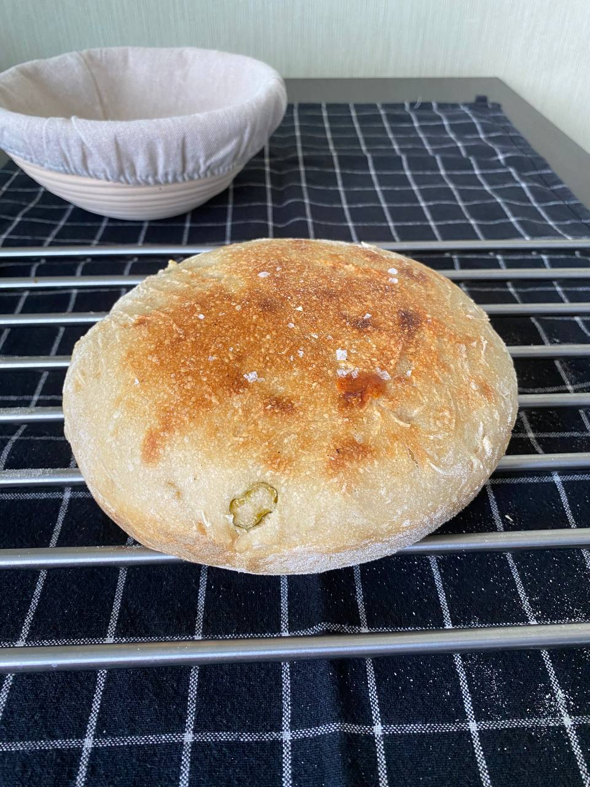

Overnight coldproofed bread

Description
I’m not going to kid you, this makes a very
rich, moist chocolate cake recipe. So if
you are a faint of heart chocolate cake person,
this is not the cake for you.
Based on the Old Fashioned Hershey’s recipe,
I sort of went a bit heavy-handed with some
changes testing cake after cake until I got
it just the way I wanted it, but the end
result was oh so worth it. The crumbs left
on the plate gave that away.
Ingredients
- 300g flour
- 100g starter
- 200g water, cold
- 5g salt
- 1% of the total weight of olive oil
Steps
- Mix everything in a bowl. Don't oversteer
- Cover the dough and place it in the fridge overnight
- Take the dough and fold it a few times
- Sprinkle the ratan bowl with the flour and move the dough into the bowl, sprinkle it with the flour as well.
- Let it sit for 1 hour
- Gently move the dough to the dutch oven
- Preheat oven for 230c
- When the oven is heated place a metalic bowl with hot water on the lower deck of the oven.
- Put the dutch oven into the oven and bake it for 45 minutes with the lid on
- Remove the lid and bake for additional 5-10 minutes or until desired crust color.
- Remove the bread from the oven and cover it in the towel for additional 1 hour to finish the baking process